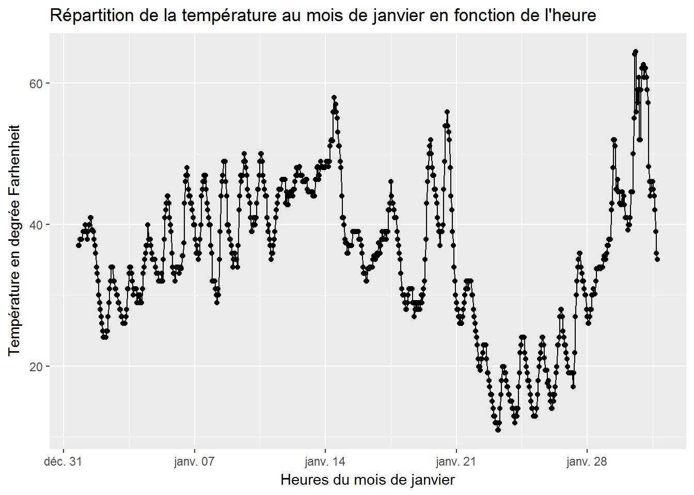
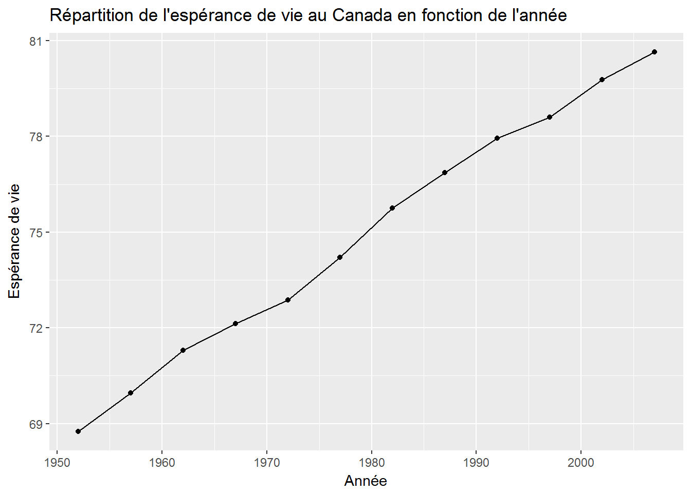
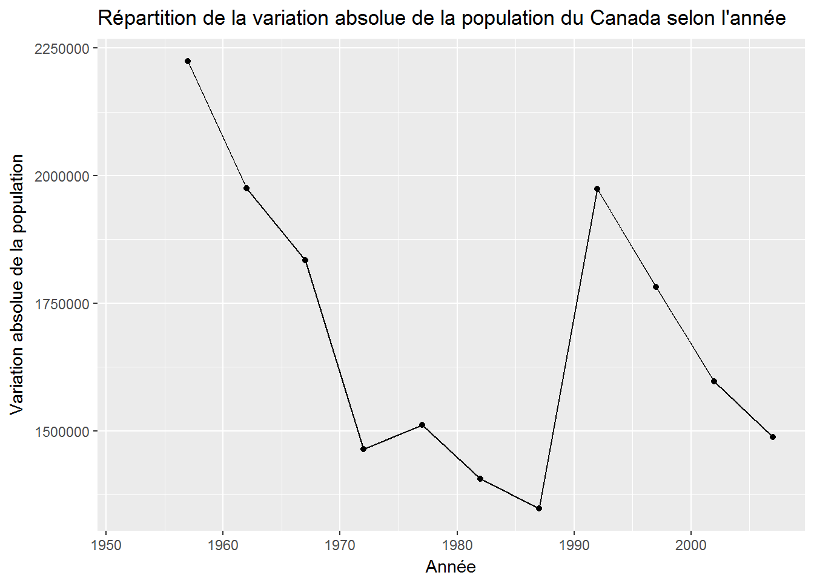
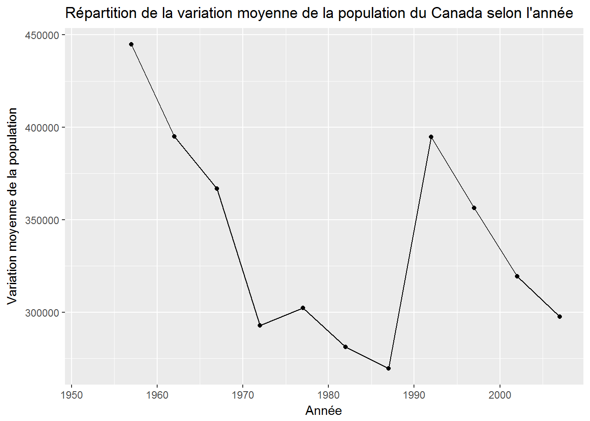
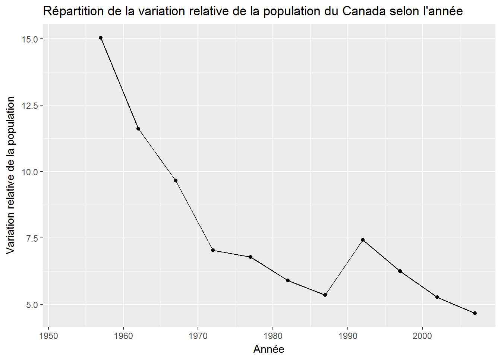

Chapitre 4 Les séries chronologiques
Débutons par charger les paquetages qui nous seront utiles.
library(gapminder)
library(nycflights13)
library(ggplot2)
library(dplyr)##
## Attachement du package : 'dplyr'## The following objects are masked from 'package:stats':
##
## filter, lag## The following objects are masked from 'package:base':
##
## intersect, setdiff, setequal, unionUne série chronologique est un ensemble de valeurs observées d’une variable quantitative. Elle permet d’analyser l’évolution de cette variable dans le temps dans le but éventuel de faire des prévisions.
4.1 Les graphiques
Nous allons débuter par utiliser la base de données nycflights13. Nous allons étudier la température au mois de janvier 2013 à l’aéroport Newark (code “EWR” dans la variable origin). La variable weather de la base de données contient ces informations mais nous devons tout d’abord filtrer les données pour ne conserver que celles qui correspondent à Newark et au mois de janvier.
La commande suivante permet de faire ce filtrage. Vous n’avez pas besoin de comprendre la syntaxe.
meteo_janvier_ewr <- weather %>%
filter(origin == "EWR" & month == 1 )Nous pouvons maintenant tracer les données obtenues:
ggplot(meteo_janvier_ewr, aes(x = time_hour, y = temp)) +
geom_line() +
geom_point() +
labs(
x = "Heures du mois de janvier",
y = "Température en degrée Farhenheit",
title = "Répartition de la température au mois de janvier en fonction de l'heure"
)
Nous pouvons aussi utiliser la paquetage gapminder qui contient des données sur l’espérance de vie. Comme précédemment, nous allons débuter par filtrer les données provenant uniquement du Canada.
gap_canada <- gapminder %>%
filter(country == "Canada")Nous pouvons maintenant tracer les données obtenues:
ggplot(gap_canada, aes(x = year, y = lifeExp)) +
geom_line() + geom_point() +
labs(
x = "Année",
y = "Espérance de vie",
title = "Répartition de l'espérance de vie au Canada en fonction de l'année")
4.2 Les mesures
4.2.1 La variation absolue
La variation absolue mesure l’augmentation (ou la diminution) subie par une variable dans le temps. Pour calculer la variation absolue entre un moment A antérieur à un moment B, on utilise la formule ci-dessous :
\[\begin{equation} \Delta V = V_B - V_A \end{equation}\]où VB est la valeur de la variable au temps B et VA est la valeur de la variable au temps A.
Remarque : Les unités de la variation absolue sont les mêmes que celles de la variable étudiée.
Si nous voulons connaître la variation absolue de la population du Canada, nous allons devoir ajouter une colonne à notre base de données gap_canada. Encore une fois, il n’est pas nécessaire de comprendre la syntaxe. Nous ajoutons une colonne variation absolue, notée var_abs, à notre base de données gap_canada.
gap_canada <- gap_canada %>%
mutate(var_abs = pop - lag(pop))Nous pouvons maintenant représenter la variable à l’aide d’un graphique.
ggplot(gap_canada, aes(x = year, y = var_abs)) +
geom_line() +
geom_point() +
labs(
x = "Année",
y = "Variation absolue de la population",
title = "Répartition de la variation absolue de la population du Canada selon l'année"
)
4.2.2 La variation moyenne
La variation moyenne mesure l’augmentation (ou la diminution) moyenne subie par une variable par unité de temps. La variation moyenne entre les moments 𝐴 et 𝐵 est donnée par :
\[\begin{equation} \Delta V_{moy} = \dfrac{V_B - V_A}{B-A} \end{equation}\]Remarque : Les unités de la variation moyenne sont les unités de la variable étudiée par unité de temps.
Si nous voulons connaître la variation moyenne de la population du Canada, nous allons devoir ajouter une colonne à notre base de données gap_canada. Encore une fois, il n’est pas nécessaire de comprendre la syntaxe. Nous ajoutons une colonne variation moyenne, notée var_moy, à notre base de données gap_canada.
gap_canada <- gap_canada %>%
mutate(var_moy = (pop - lag(pop))/(year-lag(year)))Nous pouvons maintenant représenter la variable à l’aide d’un graphique.
ggplot(gap_canada, aes(x = year, y = var_moy)) +
geom_line() +
geom_point() +
labs(
x = "Année",
y = "Variation moyenne de la population",
title = "Répartition de la variation moyenne de la population du Canada selon l'année"
)
4.2.3 La variation relative (pourcentage de variation)
La variation relative exprime en pourcentage la variation subie par une variable entre les moments 𝐴 et 𝐵. Le pourcentageest donné par:
\[\begin{equation} \Delta V_{\%} = \dfrac{V_B - V_A}{V_A}\times 100 \end{equation}\]Remarque : Il n’y a pas d’unité autre que le symbole de pourcentage.
Si nous voulons connaître la variation relative de la population du Canada, nous allons devoir ajouter une colonne à notre base de données gap_canada. Encore une fois, il n’est pas nécessaire de comprendre la syntaxe. Nous ajoutons une colonne variation relative, notée var_rel, à notre base de données gap_canada.
gap_canada <- gap_canada %>%
mutate(var_rel = (pop - lag(pop))/lag(pop) * 100)Nous pouvons maintenant représenter la variable à l’aide d’un graphique.
ggplot(gap_canada, aes(x = year, y = var_rel)) +
geom_line() +
geom_point() +
labs(
x = "Année",
y = "Variation relative de la population",
title = "Répartition de la variation relative de la population du Canada selon l'année"
)